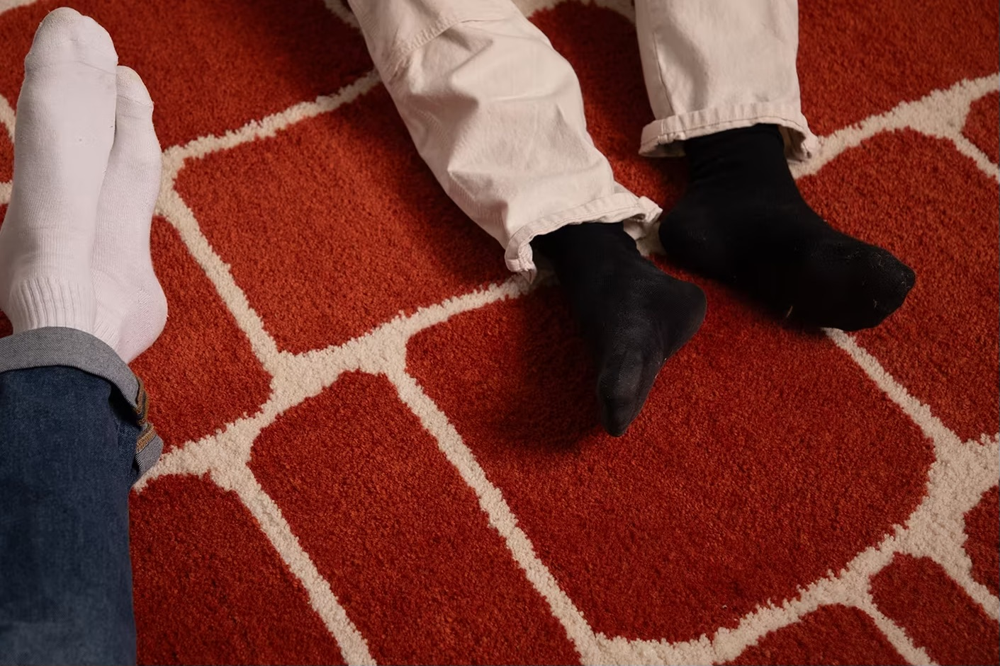

Quoi de plus compliqué que le touffetage? La menuiserie. Ces portes-revues sont la preuve que l'alliance de matériaux insolites crée un objet autant ludique qu'esthétique.



Volumique 2023
2023
Comité de l'encan des finissants de La Fabrique
Design industriel
Touffetage
Menuiserie
Métallurgie